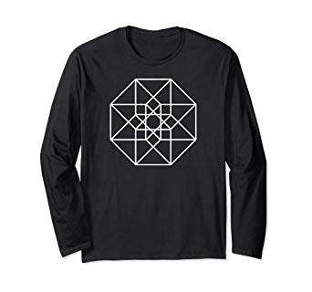
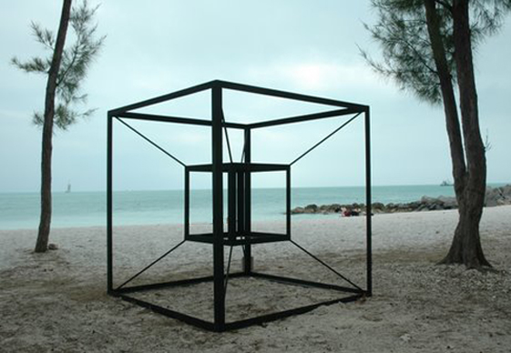
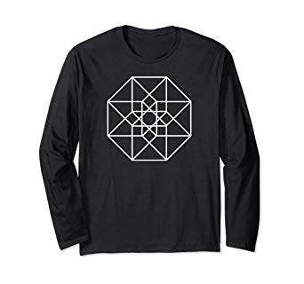
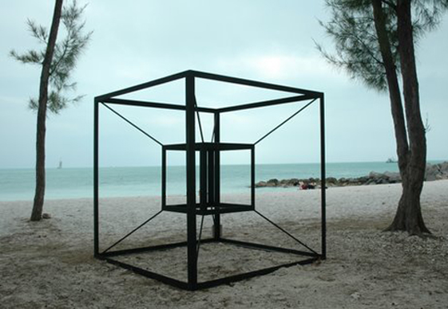
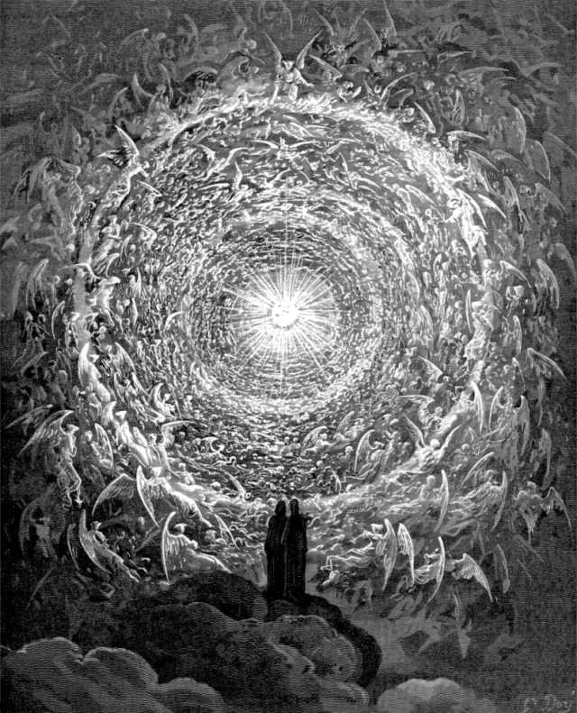

Idee a 4 dimensioni
Gian Marco Todesco - gianmarco.todesco@gmail.com
Aristotele
"Una
grandezza, se divisibile in una direzione, è una linea; se in due
direzioni, è una superficie; e se in tre direzioni, è un corpo.
Oltre queste non c'è altra grandezza, poiché
le tre dimensioni
sono tutte quelle che esistono, e ciò che è divisibile in tre
direzioni è divisibile in tutte."
De caelo, Libro 1 Capitolo 1
Internet Archive
1788 - Joseph-Louis Lagrange, Mécanique analytique
1852 - Ludwig Schläfli, Theorie der vielfachen Kontinuität
1880 - Charles Howard Hinton, What is the Fourth Dimension?


Flatland, Edwin A. Abbott, 1884
Oscar Wilde
"There was evidently no time to be lost, so, hastily adopting the Fourth Dimension of Space as a means of escape, he vanished through the wainscoting, and the house became quite quiet."
The Canterville Ghost, 1887
F. M. Dostoevsky
"Ho una mente terrena euclidea, e come potrei risolvere problemi che non appartengono a questo mondo? E ti consiglio di non pensarci mai nemmeno tu, mio caro Alëša, specialmente riguardo a Dio, se esiste o no. Tutte queste domande sono del tutto inadeguate per una mente creata con l'idea di sole tre dimensioni."
I Fratelli Karamazov, 1880

Crucifixion
(Corpus Hypercubus)
Salvador Dalí, 1954
Ipercubi dappertutto


 





The Simpsons: Season 7, episode 6
"Treehouse of Horror VI: Homer 3"
Proiezioni: Yendred
I 6 policora regolari
Sviluppi
Corpus Hypercubus
Sezioni (3D)
Sezioni (4D)
Icosaedro e Grande icosaedro
Sezioni 3D
gax
Flatland
La sfera
"Paralleli" sferici
Cosmogonia dantesca
Dodecaedri
120 celle
"Paralleli" torici
Bonds of Friendship

John Robinson - 1980